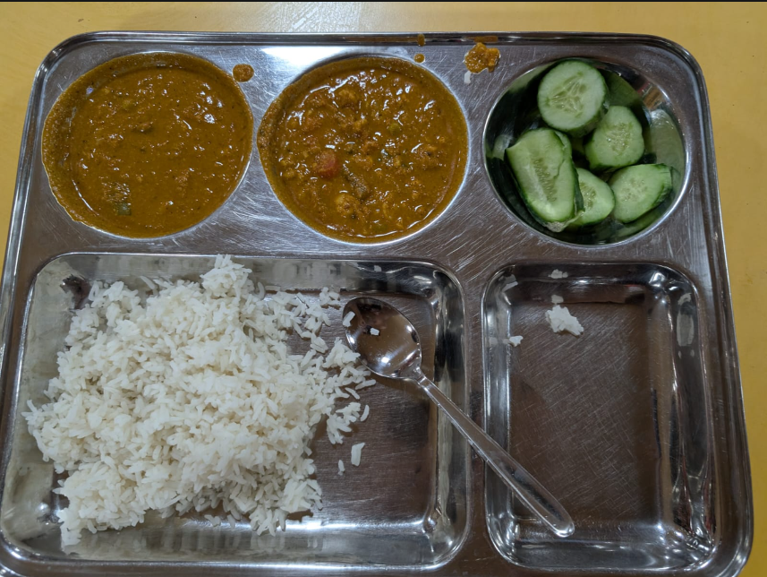

{
"resolution": "857x644",
"channels": 3,
"dtype": "uint8",
"expected_items": [
"chapati",
"steam rice",
"mix veg",
"papad",
"pickle",
"tomato chutney",
"papad"
],
"plate_profile": null,
"debug": true
}{
"food_items": [],
"confidence": 0.0,
"error": "Camera angle is too steep. Please capture a top-down photo directly above the plate like a scanner.",
"error_type": "image_quality"
}(could not read)
| Step | Message | Params | Time |
|---|---|---|---|
| Input | Original image saved | {"resolution": "857x644"} | 0.0481s |
| Pipeline | Step 1 — Preprocessing & Perspective Warp | — | — |
| Quality Gate | FAIL — Camera angle is too steep. Please capture a top-down photo directly above the plate like a scanner. | {"blur_score": 867.82, "tilt_deg": 45.0} | — |
| Pipeline | ❌ Quality gate rejected image: Camera angle is too steep. Please capture a top-down photo directly above the plate like a scanner. | — | — |